Using Our Spare Time to Make Your Spare Time more fun!


 Read
about our latest project - a frequency monitor and logger for the AC power line
- it the October 2006 issue of Nuts and
Volts magazine.
Read
about our latest project - a frequency monitor and logger for the AC power line
- it the October 2006 issue of Nuts and
Volts magazine.
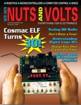
See
Spare Time Gizmos on the cover of Nuts and Volts (again)!
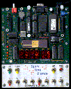
It
makes me feel old just
to think about it, but in August 2006 it has been 30 years since Joseph Weisbecker's famous COSMAC Elf article originally appeared in the pages
of Popular Electronics Magazine. In honor of that anniversary,
Nuts and Volts
magazine is running a two part article about the Spare Time Gizmos
COSMAC Elf 2000.

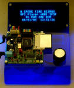
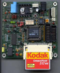
The
Spare Time Gizmos MP3 Player in Nuts and Volts!
The
October and November 2005 issues of
Nuts and Volts magazine contain a two part
construction project featuring the Spare Time Gizmos MP3 Player!
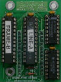
Read
about the STG1861 in Circuit Cellar Ink Magazine!
Read
issue #185 (September 2005) of
Circuit Cellar Ink magazine and you'll find a detailed discussion of the
theory behind the STG1861 "Pixie" emulator for the Elf 2000.
New Product Introductions from VCF 7.0!
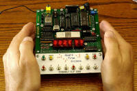
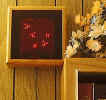
We
hope that you had a chance to visit our booth at this year's Vintage Computer
Festival 7.0 and try out our latest products - the
COSMAC ELF 2000 and our new "work of art" the
Life Game.
Spare
Time Gizmos on the cover of Nuts 'n Volts Magazine!
Well, it's not quite the cover of the Rolling Stone, but I have
a feeling I'll have to buy five copies for my mother just the same. Spare
Time Gizmos' retro vacuum tube amplifier project, the
Stereo 6T9, is featured on the
cover of the August 2004 issue of Nuts 'n
Volts magazine. Please, buy a copy today and let our friend
Editor Dan know how much you like the
article!
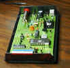
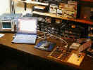
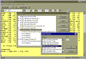
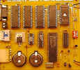
How do two people and two golden retrievers share their eclectic interests with the world?
By starting a hobby business, of course! Spare Time Gizmos
offers home-brew circuits and software projects for you to play with.
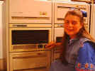
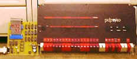

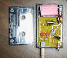
![[logo: three Life Game glider patterns surrounding the text "Spare Time Gizmos"]](images/logo.gif)